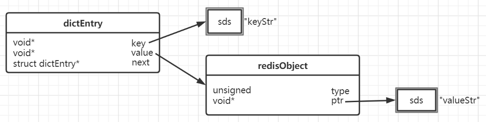

估算Redis内存使用量
Redis中的数据的内存大小与Redis的内存模型以及对象的内存编码有关
假设有100000个字符串类型的键值对，每个key的长度是12个字节，每个value的长度也是12个字节，且key和value都不是整数，要如何计算这100000个键值对所占的内存大小。
首先，Redis的外层是一个hashtable，其结构如下：

字符串的内存模型如下：

Redis的外层是一个hashtable，其内存空间占用主要来自两部分：一部分是bucket指针所占用的空间，在64位操作系统中每个指针占用八个字节大小；另一部分来自所有dictEntry占用的空间。
dictEntry占用空间说明
- dictEntry：一个dictEntry包含三个指针，一共占用24个字节，jemalloc会分配32字节的内存块
- key：key指向的是一个sds结构，所以其大小为12 + 4 = 16字节，jemalloc正好分配16个字节的内存块
- redisObject：一个redisObject占用16个字节的内存空间
- value：redisObject中的value指向的是一个sds结构，大小为12 + 4 = 16字节
综上所述，一个dictEntry所占的空间为32 + 16 + 16 + 16 = 80字节
bucket
bucket数组的大小为大于100000的最小的2^n，也就是131072，每个指针占用8字节，所以bucket占用的空间大小为：131072 * 8 = 1048576字节
所以100000个键值对所占内存总大小为：100000 * 80 + 131072 * 8 = 9048576字节
如果将key和value的长度由12字节增加到13字节，则对应的SDS变为17个字节，jemalloc将分配32个字节的内存空间，每个dictEntry占用的字节数也由80字节变为112字节，此时100000个键值对占据的内存大小变为：100000 * 112 + 131072 * 8 = 12248576字节。总内存大小从9048576字节增长到了12248576字节，增加了3200000字节，增加了32倍。
优化内存占用
利用jemalloc特性进行优化
由于jemalloc分配内存时数值是不连续的，因此key或者value字符串变化一个字节，可能会引起占用内存很大的变动，在设计时可以利用这一点。比如一个key的长度是13字节，则sds为17字节，此时jemalloc将分配32字节；如果将key的长度缩减为12字节，则sds为16字节，jemalloc只需要分配16字节的内存即可，每个key所占用的空间都可以缩小一半。
使用整型/长整型
如果是整型或者长整型，Redis会使用8个字节的int类型来代替字符串，可以节省更多空间。因此在可以使用整型或者长整型的场景下，尽量使用整型或者长整型。
共享对象
利用共享对象，可以减少对象的创建，同时可以减少redisObject的创建，以节省内存空间。目前Redis中的共享对象只包括0~9999的整数。可以通过调整REDIS_SHARED_INTEGERS参数提高共享对象的个数。
比如说Redis中存储了某个论坛的每个帖子的浏览数，而这些浏览数绝大多数分布在0~20000之间，这时就可以通过适当增大REDIS_SHARED_INTEGERS参数，便可以利用共享对象节省内存空间。
缩短键值对的存储长度
键值对的长度和性能成反比，Redis对于同一种数据类型会使用不同的内部编码进行存储，这样可以实现效率和空间的平衡。但数据量越大其使用的内部编码就越复杂，越复杂的内部编码存储的性能就越低。当键值对内容较大时还会带来如下问题：
- 内容越大需要的持久化时间就越长，需要挂起的时间越长，Redis的性能就会越低。
- 内容越大在网络上传输的内容就越多，需要的时间就越长，整体的运行速度就越低。
- 内容越大占用的内存就越多，就会更频繁的触发内存淘汰机制，从而给Redis带来了更多的运行负担。
因此在保证完整语义的同时，要尽量缩短键值对的存储长度，必要时要对数据进行序列化和压缩再存储。在Java中可以使用protostuff或kryo进行序列化，使用snappy进行压缩。